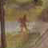

 This chapter introduces five fundamentals of Inform: how to construct games; messages, classes and actions; and how to debug games. Chapter III then makes a systematic exploration of the model world available to Inform games. Throughout both chapters, examples gradually build up a modest game called ‘Ruins’, a tale of Central American archaeology in the 1930s. Here is its first state:
Constant Story "RUINS";
Constant Headline "^An Interactive Worked Example^
Copyright (c) 1999 by Angela M. Horns.^";
Include "Parser";
Include "VerbLib";
Object Forest "~Great Plaza~"
with description
"Or so your notes call this low escarpment of limestone,
but the rainforest has claimed it back. Dark olive
trees crowd in on all sides, the air steams with the
mist of a warm recent rain, midges hang in the air.
~Structure 10~ is a shambles of masonry which might
once have been a burial pyramid, and little survives
except stone-cut steps leading down into darkness below.",
has light;
[ Initialise;
location = Forest;
"^^^Days of searching, days of thirsty hacking through the briars of
the forest, but at last your patience was rewarded. A discovery!^";
];
Include "Grammar";
If you can compile this tiny beginning successfully,
Inform is probably set up and working properly on your computer.
Compilation may take a few seconds, because although you have only
written twenty lines or so, the Include directives paste
in another seven and a half thousand. This is “the
Library”, a computer program which acts as umpire during play.
The library is divided into three parts:
Parser
which decodes what the player types;
VerbLib how actions, like “take” or
“go north”, work;
Grammar the verbs and phrases which the game
understands.
It does matter what order the three lines beginning
with Include come in, and it sometimes matters where
your own code goes with respect to them: objects shouldn't be declared
until after the inclusion of the parser, for instance. For now,
follow the structure above, with everything interesting placed between
the inclusions of VerbLib and Grammar.
▲
Chapter I above said that every Inform program
had to contain a routine called Main. Games like ‘Ruins’
are no exception, but their Main routine is part of
the library, so that game designers do not need to write a Main.
· · · · ·
The two constants at the beginning are text giving
the game's name and copyright message, which the library needs in
order to print out the “banner” announcing the game.
Similarly, the library expects to find a routine named Initialise
somewhere in your source code. This routine is called when the game
starts up, and is expected to carry out any last setting-up operations
before play begins. In most games, it also prints up a ‘welcome’
message, but the one thing it has to do is to set the location
variable to the place where the player begins. And this means that every
game has to declare at least one object, too: the room where the player
begins.
▲
In this book places are often called “rooms” even when
outdoors (like Forest) or underground. This goes back
at least to Stephen Bishop's 1842 map of the Mammoth and Flint Ridge
cave system of Kentucky, which was the setting of the first adventure
game, ‘Advent’, also called ‘Colossal Cave’
(c.1975). The author, Will Crowther, was a
caver and used the word
“room” in its caving sense. Don Woods, who recast the game
in 1976–7, confused the word further with its everyday sense.
Players of adventure games continue to call locations “rooms”
to this day.
· · · · ·
‘Ruins’ is at this stage an exceedingly dull game:
Days of searching, days of thirsty hacking through the briars of the forest, but at last your patience was rewarded. A discovery!
RUINS
An Interactive Worked Example
Copyright (c) 1998 by Angela M. Horns.
Release 1 / Serial number 990220 / Inform v6.20 Library 6/8
“Great Plaza”
Or so your notes call this low escarpment of limestone, but the
rainforest has claimed it back. Dark olive trees crowd in on all
sides, the air steams with the mist of a warm recent rain, midges
hang in the air. “Structure 10” is a shambles of masonry
which might once have been a burial pyramid, and little survives
except stone-cut steps leading down into darkness below.
>inventory
You are carrying nothing.
>north
You can't go that way.
>wait
Time passes.
>quit
Are you sure you want to quit? yes
· · · · ·
In an Inform game, objects are used to simulate
everything: rooms and items to be picked up, scenery, the player,
intangible things like mist and even some abstract ideas, like
the direction “north” or the idea of “darkness”.
The library itself is present as an object, called InformLibrary,
though like the concept of “north” it cannot be picked
up or visited during play. All told, ‘Ruins’ already
contains twenty-four objects.
It is time to add something tangible, by writing
the following just after the definition of Forest:
Object -> mushroom "speckled mushroom" with name 'speckled' 'mushroom' 'fungus' 'toadstool';
The arrow -> means that the mushroom
begins inside the previous object, which is to say, the Forest.
If the game is recompiled, the mushroom is now in play: the player
can call it “speckled mushroom”, “mushroom”,
“toadstool” and so on. It can be taken, dropped, looked
at, looked under and so on. However, it only adds the rather plain
line “There is a speckled mushroom here.” to the
Forest's description. Here is a more decorative species:
Object -> mushroom "speckled mushroom"
with name 'speckled' 'mushroom' 'fungus' 'toadstool',
initial
"A speckled mushroom grows out of the sodden earth, on
a long stalk.";
The initial message is used to tell the player
about the mushroom when the Forest is described.
(Once the mushroom has been picked or moved, the message is no longer
used: hence the name ‘initial’.) The mushroom is, however,
still “nothing special” when the player asks to “look
at” or “examine” it. To provide a more interesting
close-up view, we must give the mushroom its own description:
Object -> mushroom "speckled mushroom"
with name 'speckled' 'mushroom' 'fungus' 'toadstool',
initial
"A speckled mushroom grows out of the sodden earth, on
a long stalk.",
description
"The mushroom is capped with blotches, and you aren't
at all sure it's not a toadstool.",
has edible;
Now if we examine the mushroom, as is always wise, we get a cautionary hint. But the edible notation means that it can be eaten, so that for the first time the player can change the game state irrevocably: from a game with a forest and a mushroom into a game with just a forest.
The mushroom shows the two kinds of feature something
can have: a “property” with some definite value or list
of values and an “attribute”, which is either present
or not but has no particular value. name, initial
and description are all properties, while light
and edible are attributes. The current state of these
properties changes during play: for instance, it can be changed
by code like the following.
mushroom.description = "You're sure it's a toadstool now."; give mushroom light; if (mushroom has edible) print "It's definitely edible.^";
light is the attribute for “giving
off light”. The Forest was defined as having light
on account of daylight, so it doesn't much matter whether or not the
mushroom has light, but for the sake of botanical
verisimilitude it won't have light in the final game.
· · · · ·
Declaring objects has so far been a matter of filling
in forms: fill some text into the box marked description,
and so on. We could go much further like this, but for the sake of
example it's time to add some rules:
after [;
Take: "You pick the mushroom, neatly cleaving its thin stalk.";
Drop: "The mushroom drops to the ground, battered slightly.";
],
The property after doesn't just have
a string for a value: it has a routine of its own. What happens is
that after something happens to the mushroom, the library asks
the mushroom if it would like to react in some way. In this case,
it reacts only to Take and Drop, and
the only effect is that the usual messages (“Taken.”
“Dropped.”) are replaced by new ones. (It doesn't react
to Eat, so nothing out of the ordinary happens when
it's eaten.) ‘Ruins’ can now manage a briefly plausible
dialogue:
“Great Plaza”
Or so your notes call this low escarpment of limestone, but the rainforest
has claimed it back. Dark olive trees crowd in on all sides, the air
steams with the mist of a warm recent rain, midges hang in the air.
“Structure 10” is a shambles of masonry which might once
have been a burial pyramid, and little survives except stone-cut
steps leading down into darkness below.
A speckled mushroom grows out of the sodden earth, on a long stalk.
>get mushroom
You pick the mushroom, neatly cleaving its thin stalk.
>look at it
The mushroom is capped with blotches, and you aren't at all sure
it's not a toadstool.
>drop it
The mushroom drops to the ground, battered slightly.
▲ Gareth Rees persuasively advocates writing this sort of transcript, of an ideal sequence of play, first, and worrying about how to code up the design afterwards. Other designers prefer to build from the bottom up, crafting the objects one at a time and finally bringing them together into the narrative.
· · · · ·
The mushroom is a little more convincing now, but still does nothing. Here is a more substantial new rule:
before [;
Eat: if (random(100) <= 30) {
deadflag = true;
"The tiniest nibble is enough. It was a toadstool,
and a poisoned one at that!";
}
"You nibble at one corner, but the curious taste
repels you.";
],
The library consults before just before
the player's intended action would take place. So when the player
tries typing, say, “eat the mushroom", what happens is:
in 30% of cases, death by toadstool poisoning; and in the other 70%,
a nibble of a corner of fungus, without consuming it completely.
Like location, deadflag is
a variable belonging to the library. It's normally false,
meaning that the player is still alive and playing. Setting it to
true thus kills the player. (Setting it to 2 causes the
player to win the game and there are other uses: see
§21.)
If the “tiniest nibble” text is printed,
the rule ends there, and does not flow on into the second “You
nibble at” text. So one and only one message is printed.
Here is how this is achieved: although it's not obvious from the look
of the program, the before routine is being asked the
question “Do you want to interfere with the usual rules?”.
It must reply, that is, return, either true or
false meaning yes or no. Because this question is asked
and answered many times in a large Inform game, there are several
abbreviations for how to reply. For example,
return true; and
rtrue;
both do the same thing. Moreover,
print_ret "The tiniest nibble... ...at that!";
performs three useful tasks: prints the message, then
prints a carriage return, and then returns true. And this
is so useful that a bare string
"The tiniest nibble... ...at that!";
is understood to mean the same thing. To print the text
without returning, the statement print has to be written
out in full. Here is an example:
before [;
Taste: print "You extend your tongue nervously.^";
rfalse;
];
In this rule, the text is printed, but the answer
to “Do you want to interfere?” is no, so the game will
then go on to print something anodyne like “You taste nothing
unexpected.” (In fact the rfalse was unnecessary,
because if a rule like this never makes any decision, then the answer
is assumed to be false.)
•
EXERCISE 1
The present after routine for the mushroom is
misleading, because it says the mushroom has been picked every time
it's taken (which will be odd if it's taken, dropped then taken again).
Correct this.
· · · · ·
The following example of “form-filling”
is typical of the way that the library provides for several standard
kinds of object. This one is a kind of door, which will be gone into
properly in §13, but for now suffice to
say that a door doesn't literally have to be a door: it can be any
object which comes in between where the player is and where the
player can go. Because the object is also marked as scenery
(see §8), it isn't given any special paragraph
of description when the Forest is described. Finally, it is marked
as static to prevent the player from being able to pick
it up and walk off with it.
Object -> steps "stone-cut steps"
with name 'steps' 'stone' 'stairs' 'stone-cut' 'pyramid' 'burial'
'structure' 'ten' '10',
description
"The cracked and worn steps descend into a dim chamber.
Yours might be the first feet to tread them for five
hundred years.",
door_to Square_Chamber,
door_dir d_to
has scenery static door open;
We also need to add a new line to the Forest's definition to tell it that the way down is by these steps:
Object Forest "~Great Plaza~"
...
d_to steps,
Now “examine structure 10”, “enter stone-cut pyramid” and so forth will all work.
•
EXERCISE 2
Except of course that now ‘Ruins’ won't compile, because
Inform expects to find a room called Square_Chamber
which the steps lead to. Design one.